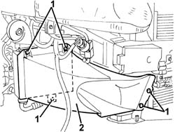
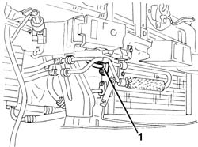
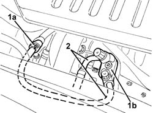

5040A73 COMPRESSOR INLET PIPE - R R
- Path
- Procedures > 50 AUXILIARY UNITS > 5040 AIR CONDITIONING CASING AND COMPONENTS > 5040A CHECKING OPERATION OF AIR CONDITIONER (TEMPERATURE) > 5040A73 COMPRESSOR INLET PIPE - R R
- Kind
- repair procedure (removal / refitting; the operation number is the code)
- Applies to
- engines: 1.9 JTD 16V; all production periods
- Interactive page
- https://sloeber94.github.io/elrnDB-aGt/en/#/125001530
Applies to: engines: 1.9 JTD 16V; all production periods
 Removing
Removing
 Refitting
RefittingObserve the following precaution.
- 7025A12 Engine front sound insulation COVER - R.R.
- 7025A14 Bonnet LID - R.R.
Drain the refrigerant (
Op. 0010T84 COOLANT FOR AIR CONDITIONING SYSTEM DEHYDRATE AND RECHARGE
).
Op. 7055B54 UNDER-ENGINE GUARD - R R
Op. 7055B64 LH OR RH REFLECTOR(ONE) ON REAR BUMPERS - R R
Op. 7055B42 LH OR RH REFLECTOR(ONE) ON REAR BUMPERS - R R
1. Working in front of the right front wheel, undo the bolts fixing the air duct.
2. Remove the air duct.

Applies to: engines: 1.9 JTD 16V; all production periods
1. Disconnect the pipe connector from the condenser.

Applies to: engines: 1.9 JTD 16V; all production periods
1. Disconnect the intermediate connector (1a) and the connector for the pipe (1b) from the compressor.
2. Remove the pipe

Applies to: engines: 1.9 JTD 16V; all production periods
Refitting
RemovingCheck that the pipe is not damaged or cracked.
Position the pipe.
Connect the pipe connectors and tighten the bolts and the nut.
 | Fastening | Component | Ø | Value (daNm) |
|---|---|---|---|---|
- | Bolt | COOLANT SYSTEM FITTINGS | M6 | 0.9 |
| Fastening | Component | Ø | Value (daNm) |
|---|---|---|---|---|
- | Nut | COOLANT SYSTEM FITTINGS | M6 | 0.9 |
Fit the air duct in place and secure it using the bolts.
Op. 7055B42 LH OR RH REFLECTOR(ONE) ON REAR BUMPERS - R R
Op. 7055B64 LH OR RH REFLECTOR(ONE) ON REAR BUMPERS - R R
Op. 7055B54 UNDER-ENGINE GUARD - R R
Repressurize using refrigerant (
Op. 0010T84 COOLANT FOR AIR CONDITIONING SYSTEM DEHYDRATE AND RECHARGE
).
- 7025A14 Bonnet LID - R.R.
- 7025A12 Engine front sound insulation COVER - R.R.
Topics linked from this page (6)
- 0010T84 COOLANT FOR AIR CONDITIONING SYSTEM DEHYDRATE AND RECHARGE
- 5040 AIR CONDITIONING CASING AND COMPONENTS
- 7055B42 LH OR RH REFLECTOR(ONE) ON REAR BUMPERS - R R
- 7055B54 UNDER-ENGINE GUARD - R R
- 7055B64 LH OR RH REFLECTOR(ONE) ON REAR BUMPERS - R R
- 7210E10 R.R. FRONT BUMPER